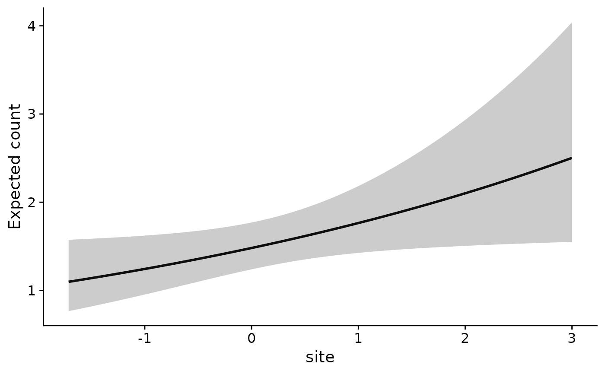
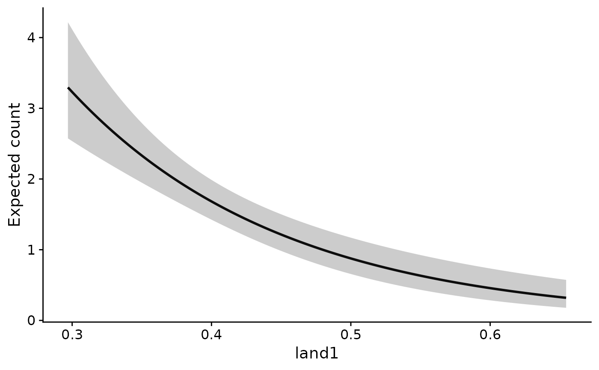
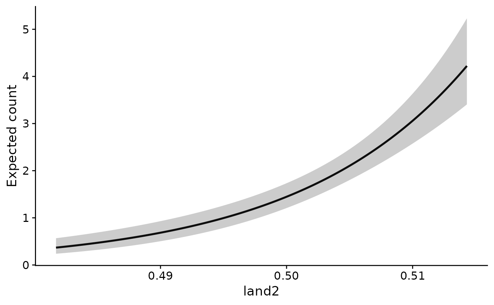
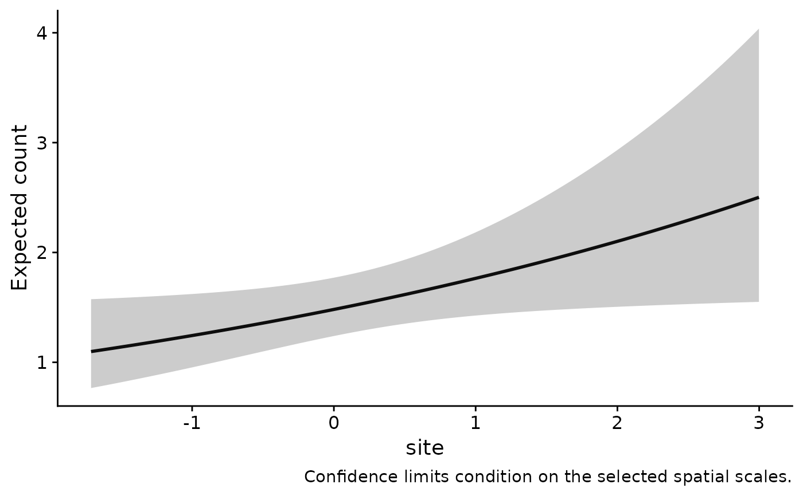
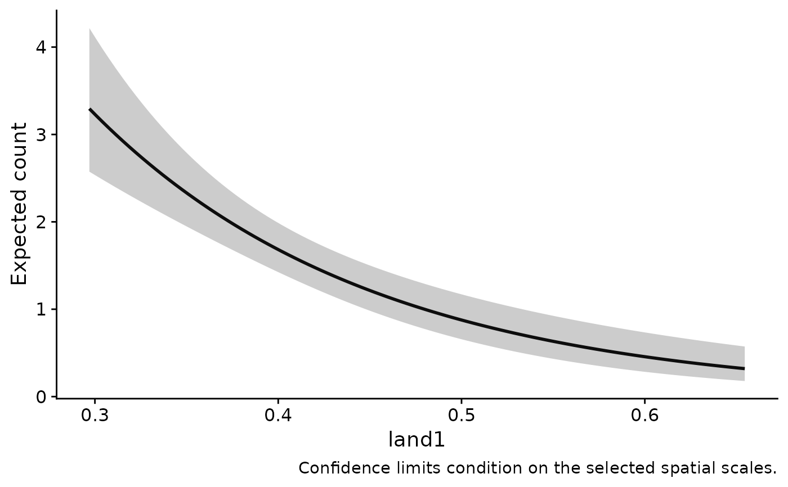
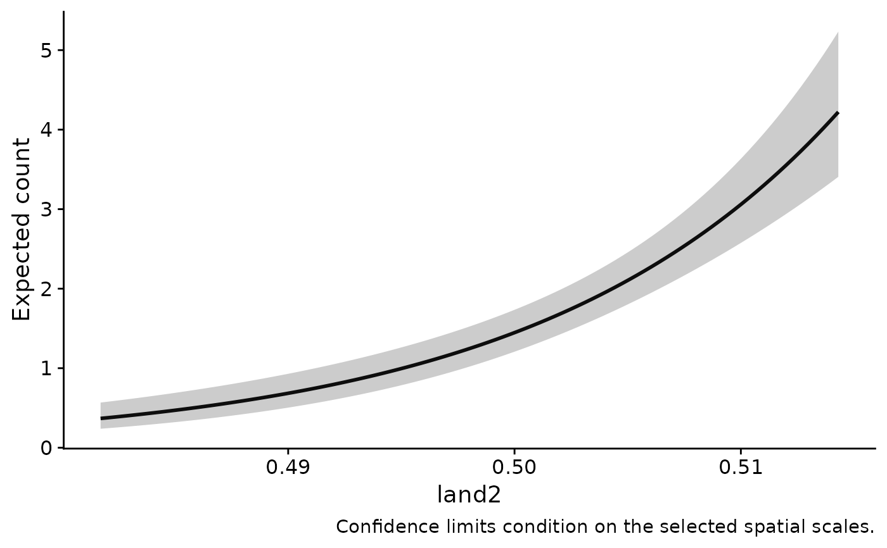
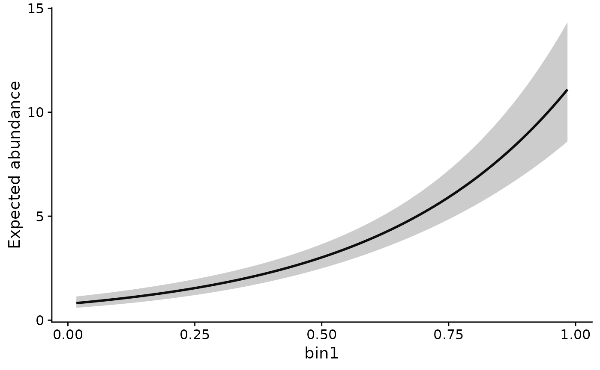
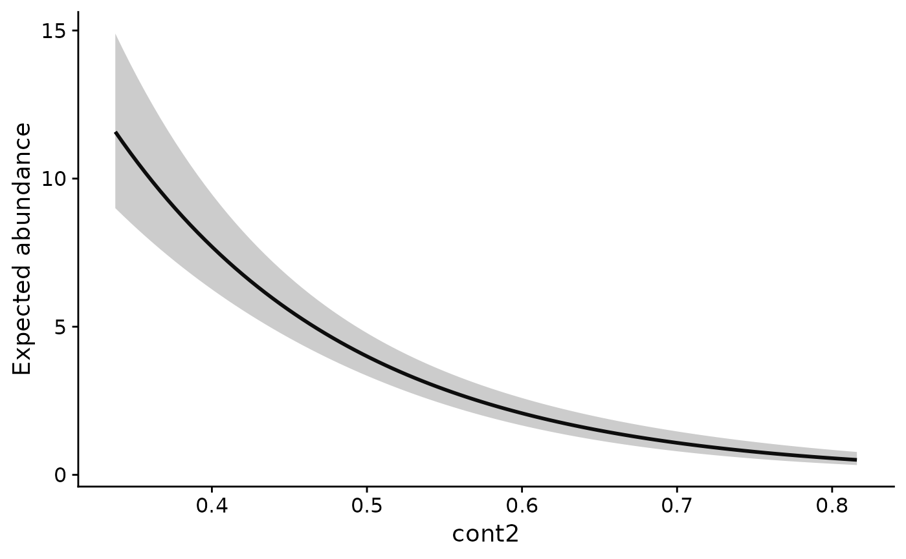

Draw one panel per covariate that shows the model's expected response as that covariate sweeps across its observed range, with every other input held at a reference value, and a 95% confidence band. Read each curve as the direction and size of one effect in the covariate's own units, at the selected scales of effect.
vignette("v02-user-guide", package = "multiScaleR") reads these plots for
a count model and an N-mixture model. multiScaleR-prediction explains
what the bands include.
Usage
plot_marginal_effects(
x,
ylab = "Estimated response",
length.out = 100,
type = "state",
link = FALSE,
draws = NULL,
reference_data = NULL,
component = NULL,
add_label = FALSE
)Arguments
- x
A fitted
multiScaleRobject frommultiScale_optim(). It must holdopt_mod(the model refit at the selected scales) andscl_params(the mean and standard deviation of each optimized covariate, used to put the x-axis back in original units). Also accepts amultiScaleR_bayesfit frommultiScale_bayes(), as described in "Bayesian fits".- ylab
Character scalar. Y-axis label for every panel. Default
"Estimated response". When you leave it unset, Cox fits use"Log relative risk"(or"Relative risk"withlink = TRUE), and GAMs with several linear predictors name the native output column.- length.out
Positive integer. Number of equally spaced values at which each numeric curve is evaluated. Default
100. Larger values give smoother curves at a small cost in time.- type
Character. Component to plot for
unmarkedmodels, ignored for other models. Default"state".occu()andpcount()fits:"state"(occupancy probability or expected abundance),"det"(detection probability), or"lambda", an alias for"state".gdistremoval()fits: an active"lambda","phi","dist", or"rem"component, with"state"as an alias for"lambda".Other
unmarkedclasses:"state"or"lambda", as the native model names its state component.
- link
Logical. If
TRUE, predictions are passed through the model's inverse link, so the curve is on the response scale. DefaultFALSE. The setting matters only for some models:glmfits, which include the model inopt_modfrom the analytic backends, and single-predictor GAMs and BAMs always plot the response scale. spaMMHLfitcurves are always transformed too.Cox fits plot the log relative risk with
FALSEand the relative risk withTRUE.GAMs with several linear predictors plot the native link-scale output with
FALSEand the native response-scale output withTRUE.componentchooses the column.unmarked, glmmTMB, lme4, and Bayesian curves use their native response scale for both settings.For other models, set
TRUEif the curve appears to be on the link scale.
- draws
For Bayesian fits, either a positive number of stored draws to select evenly across the retained sample, or explicit draw indices. The default
NULLuses at most 1000 evenly spaced draws. Ignored for other fits.- reference_data
Optional data frame of raw predictor values for the rows used to fit the model. Default
NULL, which recovers the data from the fitted model. Supply it when the fitted model frame keeps only transformed columns, such aspoly(temperature, 2). It needs unique row names that match the native training frame (rows may be reordered), and its values must reproduce the fitted features, design, factor coding, and offsets. Available for native LM, GLM, GAM, and Cox fits. See "Supply raw reference rows".- component
Optional positive integer selecting a native output column of a GAM with several linear predictors. Required for those fits and otherwise must be
NULL. Withlink = FALSEit selects a linear predictor. Withlink = TRUEit selects a native response column, whose meaning and number depend on the family. Formgcv::ziplss()response curves, selectcomponent = 1, the overall expected count, which combines both linear predictors.- add_label
Logical. If
TRUE, a caption under each panel states what the plotted limits include, such as conditioning on the selected scales or the treatment of random effects. Bayesian captions also report the number of draws and the stored status of the fit checks. DefaultFALSE, which draws the panels without a caption, as suits a figure for publication.
Value
Invisibly, a named list of ggplot2 objects, one per plotted
covariate and named after it. Each plot is also printed. A panel shows:
the predicted response as a line for a numeric covariate, or as points for the levels of a factor. The x-axis is in the covariate's original units, with optimized covariates back-transformed by
x$scl_params.a shaded band, or error bars for a factor, for the 95% limits when the model's prediction method supplies standard errors. Bayesian panels show the posterior median and central 95% credible interval.
a subtitle naming any
I()term (such asI(x^2)) or interaction that involves the covariate.
For a frequentist fit, each plot's data element holds the plotted
values: x, fit, lwr, upr, and variable. The list can carry
attributes: a
prediction_contract for unmarked, glmmTMB, lme4, multi-component GAM,
and Bayesian fits, reference_data_contract when you supply
reference_data, and draw_ids for Bayesian fits.
How each panel is built
The focal covariate sweeps from its minimum to its maximum observed value.
A factor uses its observed levels, with one point and interval per level.
Every other numeric input is held at its sample mean. For a standardized
kernel-weighted covariate the mean is 0, the average landscape value at the
survey points. Other non-numeric inputs are held at their first observed
value, which keeps an actual fitted level. Variables that enter only
through an offset are held at their sample mean and get no panel. Numeric
predictors that multiScale_optim() did not optimize keep their own units.
Panels come from the active model terms. For ordinary lm, glm,
MASS::glm.nb, and time-fixed, unpenalized Cox and clogit fits, the
fitted terms expand dot shortcuts, keep active offset covariates, and
annotate interactions. Removed terms add no panel or prediction input.
Quoted predictor names keep their original spelling. Factor contrasts and
fixed transformations are evaluated by the fitted model, and the plotting
grid never relearns a learned transformation. When x$opt_mod wraps
another fitted model, the nested model is used to find the predictors,
recover the data, and predict.
With an interaction, each panel is one slice of the interaction surface, at the mean of the interacting variable. A message says so, and the panel subtitle names the variables held at their mean.
Scale of the curves and their limits
GLMs. Predictions and their standard errors are computed on the link scale. The limits are the estimate plus and minus 1.96 standard errors, transformed by the inverse link (for example
exp()for a Poisson log link) and ordered for increasing or decreasing links. Limits with nonfinite standard errors, invalid endpoints for the link or family, or an inverse-link pole inside the interval are not shown, with a warning. Fitted values stay native, and the method does not clip or repair invalid limits.Models without a link, such as
lm: the estimate plus and minus 1.96 standard errors.glmmTMB and lme4: native response predictions, including zero-inflation and truncated-family means, with native response-scale Wald limits when available.
spaMM: the linear predictor and its native fixed-effect variance (
fixefVar), transformed through the inverse link. The response variance is not used as an interval for the mean.pscl
zeroinfl: class-specific predictions with their own limits.mgcv::ziplss(): response-scale Wald limits that propagate the full native coefficient covariance through both linear predictors. They can extend below zero.
Every frequentist band is a confidence band for the expected response. It holds the selected scales of effect at their estimates, even for the analytic backends, and it adds no observation noise, so it is not an interval for a future count.
Random effects
Mixed-model and unmarked curves set the random effects to zero
(re.form = NA). These are predictions at the stated covariate values for
a group with zero deviation, not averages over sites, years, or the
random-effect distribution. To show a curve for each year, build your own
prediction grid conditioned on that year with the fitted factor coding.
Zero-effect curves need only the fixed design and offsets. They do not
evaluate unused learned random slopes or need new grouping variables.
Unmarked models
Panels use the variables of the selected component's formula, recovered
by column name. Factor contrasts such as Year2 are coefficient labels,
not data columns, so the factor itself gets one point per observed level.
Site keys that are not fixed predictors, and detection-only predictors,
get no state panels. Other factors are held at their first observed
level. Curves stay on the native response scale for both link settings,
and their limits are the native lower and upper confidence limits.
occu()andpcount(). State curves use the original site rows, and detection curves use the original observation rows. Detection is conditional on occupancy foroccu(). Forpcount()it is the probability of detecting each individual on one survey. Curves for Poisson, negative binomial, and ZIPpcount()fits use the same checked native target as point, snapshot, and raster predictions. ZIP state curves keep the overall expected abundance, including structural zeros. Each component prepares only its own training basis, and fixed scaling, polynomial, and spline calls and transformed offsets use the original raw covariates before site removal.gdistremoval(). Curves use the component's own site, primary-period, or removal-interval rows and its fitted design, with spline knots, polynomial recipes, nested scaling, and factor interactions fixed at training."lambda"is the native abundance or density parameter,"phi"is availability,"dist"is the native distance-detection parameter, and"rem"is the removal parameter. Inactive components have no curve. These are native component values, not survey averages or random-effect marginal means. GDR models with active formula offsets or TMB zero inflation are rejected, asaic_tab()explains.Other classes that would need a different basis or a derived state prediction stop rather than plot one.
Factor coding uses retained or unambiguously recoverable original
metadata. A logical pipe inside I(), such as I(a | b), is a fixed
operation, not a random-effect declaration, but the native unmarked
parser can reject it, or a column name containing a pipe, before fitting.
Then precompute the logical predictor as a named column, or rename the
column. For complete logical inputs, I(as.integer(a) + as.integer(b) > 0)
expresses the same OR without a pipe. With missing values, precompute
a | b to keep R's missing-value logic.
Supply raw reference rows
A fitted model frame can keep poly(temperature, 2), I(elevation^2), or
a compound offset without the raw columns behind them. A square cannot
recover the sign of its input, and an orthogonal polynomial needs its
fitted prediction metadata. If you kept the raw predictors, pass them as
reference_data, with row names that identify the fitted rows:
fit_rows <- row.names(fit$opt_mod$model)
reference <- training_data[match(fit_rows, row.names(training_data)), ]
row.names(reference) <- fit_rows
plot_marginal_effects(fit, reference_data = reference)The rows are matched by ID and checked against the evaluated training
features, the full native coefficient design or smooth basis, the factor
contrasts, and the formula offsets. Missing rows or inputs, nonfinite
values, new levels, and mismatches raise an error. Transformations and
contrasts are taken from the fit, not relearned from the supplied rows or
the plotting grid. Supported nested calls use a single standard learner's
original retained attributes, and the default refitter can also recover
supported Cox recipes while the original training rows are available.
Precompute a predictor whose recipe is ambiguous or missing. For native
conditional logistic fits with learned predictors, keep the model frame
with model = TRUE and fit complete choice sets with
na.action = stats::na.fail, because some survival versions drop training
attributes when they omit rows.
For native refits, the reference must also hold the final fitted spatial
columns in their fitted units, standardized by default. The analytic
backends instead rebuild the selected kernel values from their verified
preparation. Passing the check establishes that the supplied rows
reproduce the fitted features. It cannot prove a unique raw value behind a
square, polynomial, or other many-to-one transformation, and it does not
refit the model. The reference_data_contract attribute records this.
Offsets supplied outside the formula, unsupported native structures,
matrix-valued raw inputs, and nested learned transformations without
recoverable metadata are rejected. unmarked and Bayesian curves keep
their own data requirements.
GAMs with several linear predictors
Select component explicitly. Link curves use the selected predictor's
active variables. Response curves consider every component's inputs,
because one response column can depend on several predictors. Native
response meanings are kept. For example, mgcv::gaulss() returns the mean
and the reciprocal standard deviation, and multinomial response columns
are category probabilities. Limits use native standard errors on the
selected output scale and condition on the fitted smoothing parameters and
scales of effect. Native GAM curves keep the saved factor coding of
interaction-only factors when session contrast options change. The
returned prediction_contract identifies the native output column.
Cox and step-selection models
Cox panels, including native survival::clogit() fits and the conditional
logistic backend, default to the log relative risk. link = TRUE
exponentiates it to a relative risk or relative selection score. Neither
is a probability of occurrence or survival, or a probability within a
choice set. Strata and cluster-only inputs are held at their first
observed value, which keeps an actual fitted group.
Bayesian fits
Bayesian panels use the stored marginal response-coefficient draws and the
original pooled reference normalization. Each landscape covariate sweeps a
hypothetical grid of values while the others stay at their reference
values. The coefficient draws keep their posterior variation, but the
landscape is not reevaluated at each draw's kernel scales. Response random
effects are zero, and observation noise is excluded. Use
predict.multiScaleR_bayes() with matched spatial inputs for
location-specific posterior expectations. A credible band does not
establish convergence or calibration, so check the fit diagnostics. Their
stored status appears in the caption when add_label = TRUE.
Examples
## Running example: counts at 100 survey points and two landscape layers
data("landscape_counts")
data("surv_pts")
pts <- terra::vect(surv_pts)
land <- terra::rast(system.file("extdata", "landscape.tif",
package = "multiScaleR"))[[c("land1", "land2")]]
inputs <- kernel_prep(pts, land, max_D = 1700, kernel = "gaussian",
bin = TRUE, verbose = FALSE)
dat <- data.frame(landscape_counts, inputs$kernel_dat)
start <- glm(counts ~ site + land1 + land2, family = poisson(), data = dat)
fit <- multiScale_optim(start, inputs, backend = "profile_glm",
n_cores = 1, verbose = FALSE)
## Expected count across each covariate, others at their means. The bands
## are 95% limits that hold the scales of effect at their estimates.
curves <- plot_marginal_effects(fit, ylab = "Expected count")



names(curves)
#> [1] "site" "land1" "land2"
## The values behind one panel. land1 is back on its original scale, the
## kernel-weighted proportion of habitat around a point.
head(curves$land1$data)
#> x fit lwr upr variable
#> 1 0.2969672 3.294993 2.574430 4.217237 land1
#> 2 0.3005787 3.218289 2.528560 4.096158 land1
#> 3 0.3041903 3.143370 2.483240 3.978985 land1
#> 4 0.3078019 3.070195 2.438449 3.865611 land1
#> 5 0.3114135 2.998723 2.394169 3.755934 land1
#> 6 0.3150251 2.928916 2.350381 3.649854 land1
# \donttest{
## A caption stating what the limits include, useful while exploring
plot_marginal_effects(fit, ylab = "Expected count", add_label = TRUE)



# }
## Expected abundance from a stored N-mixture fit, with native 95%
## confidence limits
nmix <- readRDS(system.file("extdata", "cache-user-guide-nmix.rds",
package = "multiScaleR"))
plot_marginal_effects(nmix, type = "state", ylab = "Expected abundance")

